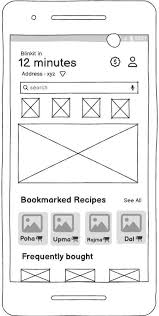
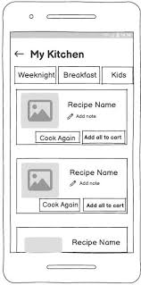

Blinkit Product Teardown
-Bookmarked Recipes
Overview
- Founded: 2013 (as Grofers)
- Acquired by: Zomato (now Eternal) in 2022 for $568M
- Category: Quick-Commerce (10-20 minute delivery)
- Core Offering: Groceries, baby care, daily essentials, personal care, electronics
- Delivery Model: Operates via dark stores (~2,000-3,000 sq. ft. micro-warehouses)
- Mission: "To make instant commerce indistinguishable from magic."
Key Performance Metrics (July 2025)
- Daily Active Users: 6.2 million
- Daily Orders: Over 1 million
- GOV: ₹4,923 Cr (Q1 FY26) → 140% YoY growth
- Dark Stores: 1,000+ live → Target: 2,000 by Dec 2025
- AOV: ₹700+
- Market Share: 46% (ahead of Zepto & Instamart)
Business Model
Blinkit operates on a dark store-based hyperlocal model, where micro-warehouses are strategically placed across urban areas to enable delivery in under 20 minutes.
Each order is fulfilled from the nearest dark store, powered by AI-led demand forecasting, real-time inventory sync, and dynamic rider allocation. Unlike traditional e-commerce, it is optimized for high-repeat, low-ticket items with small baskets and high frequency.
Revenue Streams
- Product Sales: Groceries, electronics, etc.
- Delivery Charges: Per order or via Blinkit Prime
- Private Label: Higher margin branded items
- Sponsored Listings: FMCG brand promotion
- Merchant Commissions: On SKUs sold
- In-App Advertising: Performance-based campaigns
Market Landscape & Challenges
Business Challenges
Rapid growth has pushed GOV to new highs - but unit economics are tightening.
- AOV plateauing around ₹700, limiting margin expansion
- Delivery costs rising, especially for small-ticket orders
- Repeat rates lower among transactional, need-based users
The Shift in User Behavior
Users opening Blinkit aren't always following a pre-planned shopping list - many are seeking meal inspiration in the moment. Search drop-offs occur for generic queries like "paneer", and decision fatigue sets in with hundreds of SKUs.
User Personas
Riya
The Decision-Fatigued Urban Professional
Age 27 | Gurgaon | Consultant at a Big 4 | Lives alone
Pain Points
- Doesn't know what to cook - opens app with no plan
- Gets overwhelmed by too many product choices
- Forgets the recipes she liked last week
- Buys ingredients but forgets essentials
What She Needs
- A recipe feed based on saved preferences
- One-tap "Add All to Cart" for ingredients
- Saved recipes she can revisit on weeknights
Swati
The Habit-Driven Household Planner
Age 34 | Bangalore | School Teacher | Lives with family
Pain Points
- Repeats the same 6-7 meals every week
- Relies on memory/WhatsApp - forgets ingredients
- Gets frustrated switching between sites and Blinkit
What She Needs
- A way to save go-to family meals in one place
- Recipes bundled with auto-added ingredients
- Easy filters (e.g., vegetarian, kid-friendly)
Feature Teardown: Bookmarked Recipes
Favourite Recipes is a feature designed to turn user inspiration into high-value transactions - by helping users discover, save, and shop full meal recipes in one tap.
1 "Daily Bites" on Homepage
UX RecommendationSurfaces 3-4 recently saved or frequently used recipes right on the homepage. Each card features a thumbnail, dish name, and a small cart icon that adds all ingredients in one tap. Helps users repeat meals they enjoyed without navigating deep into menus.

2 "Flavor Lab" Recipe Hub
UX RecommendationA structured home for saved recipes under the "My Account" tab. Includes category filters like Weeknight, Kids, Breakfast. Users can add short personal notes like "skip chili for kid". Prominent CTAs like "Cook Again" and add all to cart.

User Journey
Key Metrics & North Star
North Star Metric
Recipe-to-Order Conversion Rate
The percentage of Saved Recipe views that result in "Add All Ingredients" and a completed order. Directly ties the feature to revenue and engagement.
Level 1 Metrics
- New Saves per User: Avg. number of bookmarks per user in their first session.
- Saved-Recipe Views: % of users who click into their Bookmarked Recipes.
- AOV Uplift: Avg. basket value for orders initiated via Saved Recipes vs. standard orders.
Level 2 Metrics
- Repeat Usage Rate: % of users who revisit Saved Recipes ≥2x within 14 days.
- Ingredient Removal Rate: % of auto-added items removed before checkout (lower is better).
- Time-to-Checkout Reduction: Avg. time from Saved Recipe click to completed order.